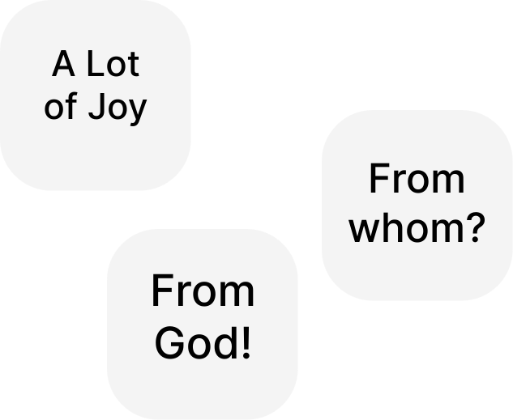

Glory Be to Jesus Christ!
🌞
Since in the work published at the link:
https://oleksandr-zhabenko.github.io/en/commentaries/02082025.html
and even earlier in others, published at the links:
https://churchandsociety.org.ua/pdf/projects/zbirnyk.pdf
https://oleksandr-zhabenko.github.io/en/commentaries/17082024.html
https://oleksandr-zhabenko.github.io/en/commentaries/27112024.html
it is written that the use of prepositions has important significance for the correct understanding of important and topical questions, particularly the question of power, I am writing comments regarding the use of precisely these prepositions. As advice regarding reading what is written — one can read the verse in translation or/and original (whoever has such possibility), and then the corresponding comment regarding prepositions here. Then it is necessary to understand which part of the verse the comment concerns, and also to consider what essential for understanding it affirms — or more rarely — denies. Such thoughtful reading helps to deepen understanding and protects from the mentioned mistakes.
Important works that shed light to this topic are the following:
https://oleksandr-zhabenko.github.io/en/commentaries/28052026.html
https://oleksandr-zhabenko.github.io/en/commentaries/16082026.html
I prepared an improved version of my research, the presentation of which is available at the link:
https://www.facebook.com/Oleksandr.S.Zhabenko/posts/
https://oleksandr-zhabenko.github.io/uk/commentaries/vystup-2025-hypo-genitive-Romans-XIII_1.pdf
The research material is currently being prepared for publication. I hope, God willing, to present fuller results later after the publication comes out.
I will update the list of references regarding prepositions at the links:
https://oleksandr-zhabenko.github.io/en/commentaries/02082025.html
https://oleksandr-zhabenko.github.io/uk/commentaries/Pryjmennyky.html
the latter — once or twice a month (in Ukrainian), to keep the text version current and up to date.
Translated from the Ukrainian original using Google Gemini Flash-3.6 with my consequent editing.
Strong's references (note: according to Strong) in the translation of the original text mean that the word is taken from Strong's dictionary, and the specific meaning was chosen following the translation and commentary by Google Gemini.
Since tomorrow is a great feast, tomorrow's readings are transferred to today. I present them consecutively.
Liturgy:
1 Thessalonians V, 2 — 'ἐν νυκτὶ' — 'en nykti' — in the night / at night.
When.
1 Thessalonians V, 3 — 'ἐν γαστρὶ' — 'en gastri' — with child / in the womb.
That is, a pregnant woman.
1 Thessalonians V, 4 — 'ἐν σκότει' — 'en skotei' — in darkness.
Where, and at the same time in what state and circumstances.
The Apostle Paul calls for sobriety, watchfulness, and expectation of the Second Glorious Coming of Jesus Christ.
Just as the Lord Jesus Christ says that His Coming in glory will be unexpected, so Paul repeats this thought here.
For more on the reading from the Apostle, see the links:
https://oleksandr-zhabenko.github.io/en/commentaries/20112025.html
https://oleksandr-zhabenko.github.io/en/commentaries/05122024.html
https://oleksandr-zhabenko.github.io/en/commentaries/09022023.html
https://oleksandr-zhabenko.github.io/en/commentaries/08022023.html
https://oleksandr-zhabenko.github.io/en/commentaries/16112023.html
Luke XI, 49 — 'εἰς αὐτοὺς' — 'eis autous' — unto them; to them.
Here the preposition 'eis' indicates the direction of movement. 'ἐξ αὐτῶν' - 'ex auton' — of them / from them.
The preposition 'ek' in its form before a following vowel indicates here selection from a specific group.
Luke XI, 50, 51 — 'ἀπὸ καταβολῆς' — 'apo kataboles' — from the foundation.
The preposition 'apo' indicates here the starting point of time reckoning. 'ἀπὸ τῆς γενεᾶς ταύτης' - 'apo tes geneas tautes' — of this generation / from this generation.
Here the preposition 'apo' indicates the responsibility of this generation.
Luke XI, 51 — 'ἀπὸ αἵματος' — 'apo haimatos' — from the blood.
The preposition 'apo' indicates the beginning from which the reckoning is kept.
Luke XI, 54 — 'ἐκ τοῦ στόματος' — 'ek tou stomatos' — out of the mouth.
The preposition 'ek' indicates here the source of origin.
Luke XII, 1 — 'Ἐν οἷς' — 'En hois' — In the meantime / In those (times).
'ἀπὸ τῆς ζύμης τῶν Φαρισαίων' - 'apo tes zymes ton Pharisaion' — of the leaven of the Pharisees / from the leaven of the Pharisees.
The preposition 'apo' indicates here that one must beware completely, entirely, utterly.
Regarding the parallel passage in Matthew, see the links:
https://oleksandr-zhabenko.github.io/en/commentaries/12082026.html
https://oleksandr-zhabenko.github.io/en/commentaries/20082025.html
https://www.instagram.com/p/CaPLr0IsFcB/
https://www.facebook.com/Oleksandr.S.Zhabenko/posts/
For more on the reading from the Gospel, see the links:
https://oleksandr-zhabenko.github.io/en/commentaries/20112025.html
https://oleksandr-zhabenko.github.io/en/commentaries/31102024.html
https://oleksandr-zhabenko.github.io/en/commentaries/02112023.html
1 Thessalonians V, 9 — 'εἰς ὀργὴν ἀλλὰ εἰς περιποίησιν σωτηρίας' — 'eis orgen alla eis peripoiesin soterias' — to wrath, but to obtain salvation.
The preposition 'eis' indicates the goal of the action here.
1 Thessalonians V, 12 — 'ἐν ὑμῖν' — 'en hymin' — among you; in you.
Where, among whom. 'ἐν κυρίῳ' - 'en kyrio' — in the Lord.
In Whom.
1 Thessalonians V, 13 — 'ἐν ἀγάπῃ' — 'en agape' — in love; by love.
Both translation options are possible. 'ἐν αὐτοῖς' - 'en autois' — among yourselves / in yourselves.
1 Thessalonians V, 26 — 'ἐν φιλήματι ἁγίῳ' — 'en philemati hagio' — with a holy kiss / in a holy kiss.
I wrote about this in greater detail; see the links:
https://oleksandr-zhabenko.github.io/en/commentaries/22092024.html
https://oleksandr-zhabenko.github.io/en/commentaries/25092024.html
The Apostle Paul bears witness to hope in the Lord, even when a person lacks proper vigilance. The Lord cares for the faithful in a special way, yet if they are inattentive, this in no way fosters drawing closer to God, but distances them from Him, which is why it must be avoided.
The Apostle Paul also calls upon them to respect labourers in the Lord's vineyard, in particular church ministers, and all who toil for the Lord's sake in goodness and truth.
For more on the reading from the Apostle, see the links:
https://oleksandr-zhabenko.github.io/en/commentaries/20112025.html
https://oleksandr-zhabenko.github.io/en/commentaries/07122024.html
https://oleksandr-zhabenko.github.io/en/commentaries/17112023.html
Luke XII, 3 — 'ἐν τῇ σκοτίᾳ' — 'en te skotia' — in the darkness.
'ἐν τῷ φωτὶ' - 'en to photi' — in the light.
'ἐν τοῖς ταμείοις' - 'en tois tameiois' — in closets / in inner storerooms
(a storage place in a house in the East). Where.
Luke XII, 4 — 'ἀπὸ τῶν ἀποκτεννόντων' — 'apo ton apoktennonton' — of them that kill / from those who kill.
The preposition 'apo' indicates that the object of fear becomes detached from that with which it is connected; that is, for a person who fears other people, fear becomes something independent and separate.
Luke XII, 5 — 'εἰς τὴν γέενναν' — 'eis ten geennan' — into hell / into Gehenna.
Where to.
Luke XII, 6 — 'ἓν ἐξ αὐτῶν' — 'hen ex auton' — one of them.
The preposition 'ek' in its form before a following vowel indicates selection from among a group of little birds.
Regarding the parallel passage in Matthew, see the links:
https://oleksandr-zhabenko.github.io/en/commentaries/18062026.html
https://oleksandr-zhabenko.github.io/en/commentaries/26062025.html
https://sites.google.com/view/rozdumy23/home/priklad-1-pro-boze-pikluvanna-i-dvoh-malenkih-ptasok
https://oleksandr-zhabenko.github.io/en/DialogueOnWordsChristFear.html
https://churchandsociety.org.ua/pdf/projects/zbirnyk.pdf
Regarding verses Luke XII, 8-12, see the links:
https://oleksandr-zhabenko.github.io/en/commentaries/07112026.html
https://oleksandr-zhabenko.github.io/en/commentaries/15112025.html
For the Gospel reading, see the links:
https://oleksandr-zhabenko.github.io/en/commentaries/20112025.html
https://oleksandr-zhabenko.github.io/en/commentaries/01112024.html
https://oleksandr-zhabenko.github.io/en/commentaries/03112023.html
Of hierarch John of Alexandria, the Merciful:
For the reading from the Apostle, see the links:
https://oleksandr-zhabenko.github.io/en/commentaries/20122025.html
https://oleksandr-zhabenko.github.io/en/commentaries/23032025.html
https://oleksandr-zhabenko.github.io/en/commentaries/19032023.html
https://oleksandr-zhabenko.github.io/en/commentaries/07042024.html
For the reading from the Gospel, see the links:
https://oleksandr-zhabenko.github.io/en/commentaries/21022026.html
https://oleksandr-zhabenko.github.io/en/commentaries/01032025.html
https://oleksandr-zhabenko.github.io/en/commentaries/16032024.html
https://oleksandr-zhabenko.github.io/en/commentaries/25022023.html
https://oleksandr-zhabenko.github.io/en/commentaries/07012026.html
https://oleksandr-zhabenko.github.io/en/commentaries/07022024.html
https://oleksandr-zhabenko.github.io/en/commentaries/10122025.html
https://oleksandr-zhabenko.github.io/en/commentaries/20112024.html
Glory be to Thee, our God, glory be to Thee!